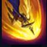

Pantheon
| The Unbreakable | |
|---|---|
| Release date | 02.02.2010 |
| Class | Diver |
| Positions | Middle,Support |
| Resource | Mana |
| Range type | Melee |
| Adaptive type | Physical |
| Base statistics | |||
| Health | 580 – 2195 | Mana | 317.12 – 844.12 |
| Health regen. | 9 – 20.05 |
Mana regen. | 7.356 – 15.01 |
| Armor | 40 – 103.75 | Attack damage | 64 – 120.1 |
| Magic resist. | 28 – 49.25 | Crit. damage | 175% |
| Move. speed | 345 | Attack range | 175 |
Cândva o gazdă a Aspectului Războiului fără voia sa, Atreus a supraviețuit uciderii puterii celeste din interiorul său, refuzând să cedeze în fața unei lovituri care a smuls stelele de pe cer. În timp, a învățat să folosească puterea efemerității sale și rezistența înverșunată care o însoțește. Acum, Atreus se opune divinităților sub forma unui Pantheon renăscut. Armele Aspectului căzut sunt alimentate pe câmpul de luptă de voința sa indestructibilă. | VOINTA MURITORILOR După câteva vrăji sau atacuri, următoarea vrajă a lui Pantheon este îmbunătățită. |
|||
|---|---|---|---|---|
LANCEA COMETEI Pantheon lovește cu lancea sau își aruncă lancea în direcția aleasă. |
||||
SALTUL RAZBOIULUI Pantheon se năpustește spre o țintă, provocându-i daune și amețind-o. |
||||
| ASALTUL SCUTULUI Pantheon își ridică scutul, devenind invulnerabil la daunele din față și lovind rapid cu lancea. |
||||
 |
SALT CERESC Pantheon se concentrează, apoi sare în înaltul cerului și aterizează ca o cometă în locația aleasă |